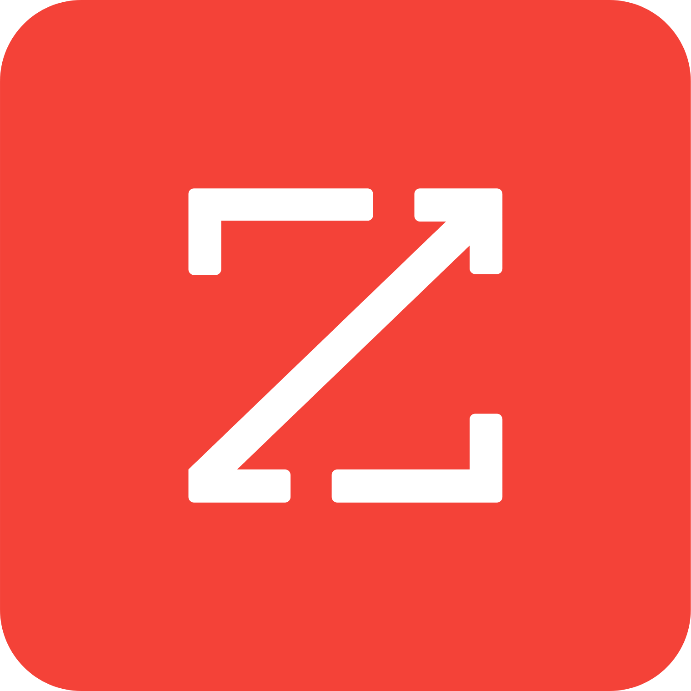

B2B sales prospecting is broken for most teams. They spend too much time on manual tasks, struggle with personalization, juggle disconnected tools, and watch productivity flatline. Manual lead compilation, generic outreach, and scattered systems create pipeline bottlenecks that no amount of hustle can fix.
The fix is not working harder. It's building a smarter prospecting system that automates the repetitive parts and lets your team focus on conversations that close deals.
Here are 10 proven tactics to make that happen.
In this article
- Automate lead sourcing with Overloop
- Personalize outreach with AI-powered email writing
- Use LinkedIn for hyper-targeted prospecting
- Implement multi-channel campaigns
- Score and prioritize leads with AI
- Analyze and optimize with real-time insights
- Reduce manual data entry with CRM integrations
- Tools comparison table
The modern prospecting stack
Before diving into tactics, here's the landscape of tools that make these tips possible:
| Tool | Key features | Pain point solved |
|---|---|---|
 Overloop Overloop |
AI lead sourcing, automated personalization, multi-channel outreach, CRM integration | Manual lead research, low personalization, tool switching |
| LinkedIn Sales Navigator | Advanced prospect filters, decision-maker targeting, saved lead lists | Time-consuming search, finding relevant contacts |
| Mailshake | Automated outreach, mail merge, analytics | Manual email sending, measuring campaign success |
| HubSpot | Automated data capture, workflow management, reporting | Manual CRM updates, lack of visibility |
 Apollo.io Apollo.io |
B2B database, multi-channel sequences, enrichment | Lead sourcing, outreach orchestration |
 Salesforce Salesforce |
Einstein lead scoring, workflow automation, pipeline management | Lead prioritization, forecasting |
1Automate lead sourcing with Overloop
Manual lead sourcing overwhelms teams and restricts growth. Hunting through LinkedIn, building spreadsheets by hand, copying contact details one by one. Overloop's AI searches a database of 450+ million verified business contacts and matches them to your ideal customer profile instantly.
Overloop

ZoomInfo LushaWhat changes
- Eliminates manual list building through automated criteria matching
- Enriches data with emails, LinkedIn profiles, company firmographics, engagement signals
- Updates leads continuously to prevent outdated contacts
- One-click enrollment into multi-channel campaigns
How it compares: ZoomInfo and Lusha offer enriched B2B data, but Overloop differentiates by combining AI sourcing with direct multi-channel campaign enrollment. One tool, not three.
2Personalize outreach with AI-powered email writing
Generic emails get ignored. Modern prospects expect messages that reference their specific situation. AI personalization adapts content by recipient role: CTOs get technical depth, Marketing Directors get growth angles. The AI references company news, product launches, and technology stacks automatically.
Real impact: Reply rates increase 2-3x when shifting from static templates to AI-personalized emails. AI surfaces talking points from LinkedIn profiles and company websites, enabling hundreds of tailored messages per day without extra effort.
3Use LinkedIn for hyper-targeted prospecting
LinkedIn Sales Navigator lets you filter targets by role, company size, geography, and recent activity. Build custom lead lists aligned with your ICP, set alerts for job changes or company news, and identify buying signals through profile engagement.
Overloop
The automation layer
Overloop integrates LinkedIn workflows directly: enroll filtered leads into automated sequences, set multi-step outreach with reminders and engagement tracking, and manage everything from one dashboard. Saves sales reps hours weekly.
- Better lead quality since every connection fits your criteria
- Higher reply rates because outreach aligns with prospect needs
- More efficiency with multiple touchpoints from one dashboard
4Implement multi-channel campaigns for higher engagement
Single-channel email outreach is not enough. Modern buyers shift between their inbox, LinkedIn, and phone. Blending email, LinkedIn actions, and calls in coordinated sequences yields dramatically higher response rates.
Overloop
Outreach
Apollo.io
How Overloop handles multi-channel
- Design step-by-step sequences combining personalized emails, LinkedIn actions (connection requests, messages, profile views), and phone calls
- Single platform eliminates tool switching
- Set timing, order, and touchpoint type for each sequence step
- Platform automatically triggers actions and logs engagement
- Track performance at each channel and touchpoint
Competitor context: Outreach and Apollo.io support multi-channel workflows, but Overloop links AI-sourced leads directly to personalized, automated campaigns. No manual handoff between tools.
5Score and prioritize leads with AI
Not all leads have equal conversion potential. AI scoring analyzes thousands of variables faster than any human: email open/reply rates, website visits, content downloads, company size, industry, and recent buying signals.
Overloop
HubSpot Sales Hub
Salesforce
How each platform approaches scoring
- Overloop: Scores and segments leads based on engagement and fit, routes to appropriate outreach workflows automatically
- HubSpot Sales Hub: Predictive lead scoring with workflow automation integrated into CRM
- Salesforce: Einstein lead scoring learns from your sales data to highlight top opportunities
Result: Shorter sales cycles, higher conversion rates, and a healthier pipeline with less manual guesswork. AI models improve over time as they learn from your closed deals.
6Analyze and optimize with real-time insights
You need clarity on which strategies produce results. Centralize key metrics (opens, reply rates, bounces, engagement) across all channels in a single live dashboard. Identify best-performing channels instantly, spot bottlenecks where prospects drop off, and run A/B tests on subject lines and templates.
- Managers and reps track activity against goals and quotas
- Individual and team performance visible in one place
- Quick problem identification enables rapid tactical adjustment
7Reduce manual data entry with CRM integrations
Manual data entry kills velocity. Updating lead records, copying notes between tools, logging activities by hand. CRM integrations automate all of it: data capture, activity syncing, and workflow triggers.
Salesforce
 Pipedrive
Pipedrive
What Overloop integrates with
- HubSpot: Auto-create/update contacts, sync emails and calls, trigger workflows on responses
- Salesforce: Same automated data capture plus Einstein-powered workflow triggering
- Pipedrive: Pipeline management with enriched lead profiles
Outcome: Reduced manual work, improved pipeline tracking, faster response times, shorter sales cycles. Teams always work from updated records, never stale spreadsheets.
How much pipeline are you leaving on the table?
Plug in your numbers. See what automation actually changes.
No credit card. Free 14-day trial.
Transform your B2B prospecting
Stop stitching together 5 different tools. Overloop handles lead sourcing, AI personalization, multi-channel outreach, and CRM sync in a single platform.
Book a 5-minute demo